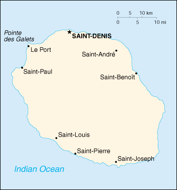

(overseas department of France)
|
Reunion (overseas department of France) |
|
| Introduction Geography People Government Economy Communications Transportation Military Transnational Issues | ||
|  | ||
| Reunion | Introduction | Top of Page |
| Background: | The Portuguese discovered the uninhabited island in 1513. From the 17th to the 19th centuries, French immigration supplemented by influxes of Africans, Chinese, Malays, and Malabar Indians gave the island its ethnic mix. The opening of the Suez Canal in 1869 cost the island its importance as a stopover on the East Indies trade route. |
| Reunion | Geography | Top of Page |
| Location: | Southern Africa, island in the Indian Ocean, east of Madagascar |
| Geographic coordinates: | 21 06 S, 55 36 E |
| Map references: | World |
| Area: |
total:
2,512 sq km
land: 2,502 sq km water: 10 sq km |
| Area - comparative: | slightly smaller than Rhode Island |
| Land boundaries: | 0 km |
| Coastline: | 207 km |
| Maritime claims: |
exclusive economic zone:
200 NM
territorial sea: 12 NM |
| Climate: | tropical, but temperature moderates with elevation; cool and dry from May to November, hot and rainy from November to April |
| Terrain: | mostly rugged and mountainous; fertile lowlands along coast |
| Elevation extremes: |
lowest point:
Indian Ocean 0 m
highest point: Piton des Neiges 3,069 m |
| Natural resources: | fish, arable land, hydropower |
| Land use: |
arable land:
17%
permanent crops: 2% permanent pastures: 5% forests and woodland: 35% other: 41% (1993 est.) |
| Irrigated land: | 60 sq km (1993 est.) |
| Natural hazards: | periodic, devastating cyclones (December to April); Piton de la Fournaise on the southeastern coast is an active volcano |
| Environment - current issues: | NA |
| Reunion | People | Top of Page |
| Population: | 732,570 (July 2001 est.) |
| Age structure: |
0-14 years:
32.07% (male 120,259; female 114,669)
15-64 years: 62.25% (male 224,347; female 231,698) 65 years and over: 5.68% (male 16,892; female 24,705) (2001 est.) |
| Population growth rate: | 1.57% (2001 est.) |
| Birth rate: | 21.26 births/1,000 population (2001 est.) |
| Death rate: | 5.52 deaths/1,000 population (2001 est.) |
| Net migration rate: | 0 migrant(s)/1,000 population (2001 est.) |
| Sex ratio: |
at birth:
1.05 male(s)/female
under 15 years: 1.05 male(s)/female 15-64 years: 0.97 male(s)/female 65 years and over: 0.68 male(s)/female total population: 0.97 male(s)/female (2001 est.) |
| Infant mortality rate: | 8.49 deaths/1,000 live births (2001 est.) |
| Life expectancy at birth: |
total population:
72.93 years
male: 69.53 years female: 76.49 years (2001 est.) |
| Total fertility rate: | 2.58 children born/woman (2001 est.) |
| HIV/AIDS - adult prevalence rate: | NA% |
| HIV/AIDS - people living with HIV/AIDS: | NA |
| HIV/AIDS - deaths: | NA |
| Nationality: |
noun:
Reunionese (singular and plural)
adjective: Reunionese |
| Ethnic groups: | French, African, Malagasy, Chinese, Pakistani, Indian |
| Religions: | Roman Catholic 86%, Hindu, Muslim, Buddhist (1995) |
| Languages: | French (official), Creole widely used |
| Literacy: |
definition:
age 15 and over can read and write
total population: 79% male: 76% female: 80% (1982 est.) |
| Reunion | Government | Top of Page |
| Country name: |
conventional long form:
Department of Reunion
conventional short form: Reunion local long form: none local short form: Ile de la Reunion former: Bourbon Island |
| Dependency status: | overseas department of France |
| Government type: | NA |
| Capital: | Saint-Denis |
| Administrative divisions: | none (overseas department of France); there are no first-order administrative divisions as defined by the US Government, but there are 4 arrondissements, 24 communes, and 47 cantons |
| Independence: | none (overseas department of France) |
| National holiday: | Bastille Day, 14 July (1789) |
| Constitution: | 28 September 1958 (French Constitution) |
| Legal system: | French law |
| Suffrage: | 18 years of age; universal |
| Executive branch: |
chief of state:
President Jacques CHIRAC of France (since 17 May 1995), represented by Prefect Robert POMMIES (since NA 1996)
head of government: President of the General Council Jean-Luc POUDROUX (since NA March 1998) and President of the Regional Council Paul VERGES (since NA March 1993) cabinet: NA elections: French president elected by popular vote for a seven-year term; prefect appointed by the French president on the advice of the French Ministry of the Interior; the presidents of the General and Regional Councils are elected by the members of those councils |
| Legislative branch: |
unicameral General Council (47 seats; members are elected by direct popular vote to serve six-year terms) and a unicameral Regional Council (45 seats; members are elected by direct popular vote to serve six-year terms)
elections: General Council - last held NA March 1994 (next to be held NA 2000); Regional Council - last held 15 March 1998 (next to be held NA 2004) election results: General Council - percent of vote by party - NA%; seats by party - PCR 12, PS 12, UDF 11, RPR 5, others 7; Regional Council - percent of vote by party - NA%; seats by party - PCR 7, UDF 8, PS 6, RPR 4, various right-wing candidates 15, various left-wing candidates 5 note: Reunion elects three representatives to the French Senate; elections last held 14 April 1996 (next to be held NA 2001); results - percent of vote by party - NA%; seats by party - RPR 1, PCR 2; Reunion also elects five deputies to the French National Assembly; elections last held 25 May and 1 June 1997 (next to be held NA 2002); results - percent of vote by party - NA%; seats by party - PCR 3, PS 1, and RPR-UDF 1 |
| Judicial branch: | Court of Appeals or Cour d'Appel |
| Political parties and leaders: | Communist Party of Reunion or PCR [Paul VERGES]; Rally for the Republic or RPR [Andre Maurice PIHOUEE]; Socialist Party or PS [Jean-Claude FRUTEAU]; Union for French Democracy or UDF [Gilbert GERARD] |
| Political pressure groups and leaders: | NA |
| International organization participation: | FZ, InOC, WFTU |
| Diplomatic representation in the US: | none (overseas department of France) |
| Diplomatic representation from the US: | none (overseas department of France) |
| Flag description: | the flag of France is used |
| Reunion | Economy | Top of Page |
| Economy - overview: | The economy has traditionally been based on agriculture. Sugarcane has been the primary crop for more than a century, and in some years it accounts for 85% of exports. The government has been pushing the development of a tourist industry to relieve high unemployment, which amounts to more than 40% of the labor force. The gap in Reunion between the well-off and the poor is extraordinary and accounts for the persistent social tensions. The white and Indian communities are substantially better off than other segments of the population, often approaching European standards, whereas minority groups suffer the poverty and unemployment typical of the poorer nations of the African continent. The outbreak of severe rioting in February 1991 illustrates the seriousness of socioeconomic tensions. The economic well-being of Reunion depends heavily on continued financial assistance from France. |
| GDP: | purchasing power parity - $3.4 billion (1998 est.) |
| GDP - real growth rate: | 3.8% (1998 est.) |
| GDP - per capita: | purchasing power parity - $4,800 (1998 est.) |
| GDP - composition by sector: |
agriculture:
NA%
industry: NA% services: NA% |
| Population below poverty line: | NA% |
| Household income or consumption by percentage share: |
lowest 10%:
NA%
highest 10%: NA% |
| Inflation rate (consumer prices): | NA% |
| Labor force: | 261,000 (1995) |
| Labor force - by occupation: | agriculture 8%, industry 19%, services 73% (1990) |
| Unemployment rate: | 42.8% (1998) |
| Budget: |
revenues:
NA
expenditures: NA |
| Industries: | sugar, rum, cigarettes, handicraft items, flower oil extraction |
| Industrial production growth rate: | NA% |
| Electricity - production: | 1.1 billion kWh (1999) |
| Electricity - production by source: |
fossil fuel:
54.55%
hydro: 45.45% nuclear: 0% other: 0% (1999) |
| Electricity - consumption: | 1.023 billion kWh (1999) |
| Electricity - exports: | 0 kWh (1999) |
| Electricity - imports: | 0 kWh (1999) |
| Agriculture - products: | sugarcane, vanilla, tobacco, tropical fruits, vegetables, corn |
| Exports: | $214 million (f.o.b., 1997) |
| Exports - commodities: | sugar 63%, rum and molasses 4%, perfume essences 2%, lobster 3%, (1993) |
| Exports - partners: | France 74%, Japan 6%, Comoros 4% (1994) |
| Imports: | $2.5 billion (c.i.f., 1997) |
| Imports - commodities: | manufactured goods, food, beverages, tobacco, machinery and transportation equipment, raw materials, and petroleum products |
| Imports - partners: | France 64%, Bahrain 3%, Germany 3%, Italy 3% (1994) |
| Debt - external: | $NA |
| Economic aid - recipient: | $NA; note - substantial annual subsidies from France |
| Currency: | French franc (FRF); euro (EUR) |
| Currency code: | FRF; EUR |
| Exchange rates: | euros per US dollar - 1.06594 (January 2001), 1.08540 (2000), 0.9386 (1999); French francs per US dollar - 5.8995 (1998), 5.8367 (1997), 5.1155 (1996) |
| Fiscal year: | calendar year |
| Reunion | Communications | Top of Page |
| Telephones - main lines in use: | 236,500 (1997) |
| Telephones - mobile cellular: | 85,000 (1999) |
| Telephone system: |
general assessment:
adequate system; principal center is Saint-Denis
domestic: modern open wire and microwave radio relay network international: radiotelephone communication to Comoros, France, Madagascar; new microwave route to Mauritius; satellite earth station - 1 Intelsat (Indian Ocean) |
| Radio broadcast stations: | AM 2, FM 55, shortwave 0 (1998) |
| Radios: | 173,000 (1997) |
| Television broadcast stations: | 22 (plus 18 low-power repeaters) (1997) |
| Televisions: | 127,000 (1997) |
| Internet country code: | .re |
| Internet Service Providers (ISPs): | 1 (2000) |
| Internet users: | 10,000 (2000) |
| Reunion | Transportation | Top of Page |
| Railways: | 0 km |
| Highways: |
total:
2,724 km
paved: 1,300 km (including 73 km of four-lane road) unpaved: 1,424 km note: 370 km of road are maintained by national authorities, 754 km by departmental authorities and 1600 km by local authorities (1994) |
| Waterways: | none |
| Ports and harbors: | Le Port, Pointe des Galets |
| Merchant marine: |
total:
1 ship (1,000 GRT or over) totaling 28,264 GRT/44,885 DWT
ships by type: chemical tanker 1 (2000 est.) |
| Airports: | 2 (2000 est.) |
| Airports - with paved runways: |
total:
2
2,438 to 3,047 m: 1 914 to 1,523 m: 1 (2000 est.) |
| Reunion | Military | Top of Page |
| Military branches: | French forces (Army, Navy, Air Force, and Gendarmerie) |
| Military manpower - military age: | 18 years of age |
| Military manpower - availability: | males age 15-49: 190,846 (2001 est.) |
| Military manpower - fit for military service: | males age 15-49: 97,497 (2001 est.) |
| Military manpower - reaching military age annually: | males: 6,243 (2001 est.) |
| Military - note: | defense is the responsibility of France |
| Reunion | Transnational Issues | Top of Page |
| Disputes - international: | none |
{kind=link}
{kind=link}